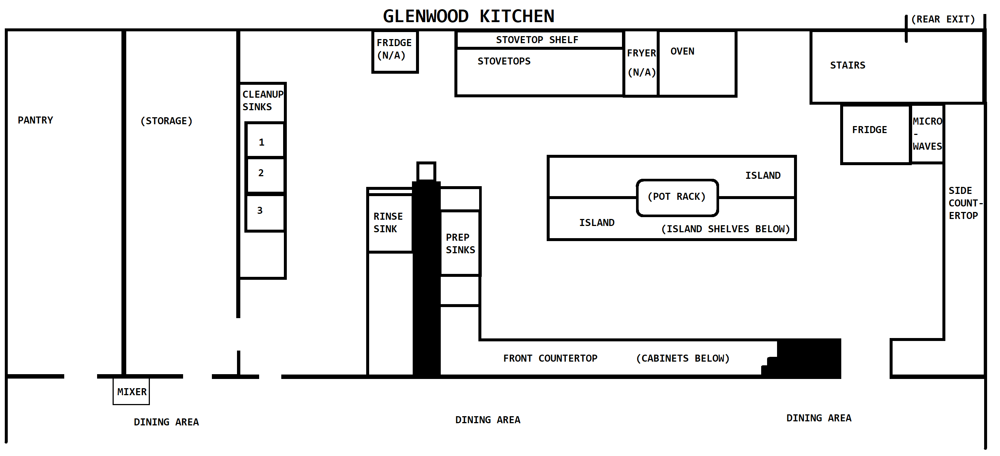

Finding and storing things in the Glenwood Lutheran Church kitchen

Storing cookware and dishes
Some Toledo Food Not Bombs members and church members collaborated (in the Spring of 2023) on a kitchen re-organization and a directory system for locating and returning items in the kitchen. All of the cupboards, drawers, and racks have signs with location codes and numbers on them; you can use this directory to find items that you need to use by looking them up by their name and identifying the corresponding location in the kitchen. If items or item names are missing from this directory, please tell John Clark about it.
You can find a print version of this directory in the kitchen on the counter near the phone.
Location codes
| Code | Location |
|---|---|
| C | cupboard |
| D | drawer |
| R | rack |
A—C
| Name | Storage location |
|---|---|
| Aprons, disposable | C #9 bottom shelf |
| Aprons, fabric | D #4 |
| Baskets | C #31 top shelf, C #32 fourth shelf |
| Basting brush | D #14 |
| Beater, hand | D #14 |
| Beverage carafes, insulated stainless steel | R #1 second shelf |
| Beverage dispenser, clear plastic | R #1 top shelf |
| Beverage dispenser, cold (glass) | Rack #1 second shelf |
| Biscuit cutter | D #14 |
| Bottle openers | D #19 |
| Bowls, disposable | C #27 bottom shelf |
| Bowls, salad/dessert (clear glass) | C #33 middle & bottom |
| Bowls, serving (ceramic) | C #31 middle shelf |
| Bowls, serving (glass) | C #6 top shelf |
| Bowls, soup | C #29 bottom shelf |
| Bread pan | R #3 third shelf |
| Cake base, cardboard, round | C #32 bottom shelf |
| Cake plates | C #7 top shelf and C #8 top shelf |
| Cake servers | D #15 |
| Cake stand | C #6 bottom shelf |
| Cake stand with lid | C #6 top shelf |
| Can openers | D #19 |
| Candle holders, glass stars | C #25 bottom shelf |
| Candles, birthday | D #3 |
| Carafes, water | C #23 bottom shelf |
| Carafes, insulated coffee | C #29 middle shelf |
| Ceramic coffee & tea set | C #25 middle shelf |
| Chopping blade | D #2 |
| Cleaver | D #2 |
| Clips | D #3 |
| Coffee | C #22 bottom shelf |
| Coffee carafes | R #1 second shelf |
| Coffee creamer | C #30 top shelf |
| Coffee filers | C #22 middle shelf |
| Coffee pitchers, thermal | C #29 third shelf |
| Coffee pots | R #1 top shelf |
| Cookie sheets | kitchen island prep table |
| Cooler | R #1 second shelf/ R #2 top shelf/R #3 top shelf |
| Crockpots | R #2 third shelf |
| Cupcake pans | R #3 second shelf |
| Cupcake pans, mini | R #3 second shelf |
| Cups, ceramic | C #34 top & second & third shelves |
| Cups, disposable | C #26 top & middle shelves |
| Cutting boards | C #12 bottom shelf |
D—K
| Name | Storage location |
|---|---|
| Dish cloths | C #21 top shelf |
| Dish pan, metal | R #2 second shelf |
| Dish towels | C #20 top shelf |
| Dish, small | C #32 middle shelf |
| Disposable aprons | C #9 bottom shelf |
| Disposable bowls | C #27 bottom shelf |
| Disposable cups | C #26 top & middle shelves |
| Disposable forks | C #28 top shelf |
| Disposable knives | C #28 2 nd shelf |
| Disposable ramekins | C #25 bottom shelf |
| Disposable spoons | C #28 top shelf |
| Drinking glasses | C #32 top & 2 nd shelf |
| Electric roasters | storage room next to gym |
| Electrical tape | D #1 |
| Face masks | C #9 bottom shelf |
| Flashlight | D #3 |
| Foil | D #18 |
| Foil, wider | kitchen island prep table |
| Food processor | R #2 third shelf |
| Food staples | C #24 bottom shelf |
| Forks, disposable | C #28 top shelf |
| Forks, serving | D #15 |
| Forks (silverware) | C #9 top shelf |
| Freezer paper | C #18 bottom shelf |
| Funnel | D #14 |
| Garlic press | D #14 |
| Glasses, wine | C #33 top & middle shelf |
| Gloves, disposable | C #9 bottom shelf |
| Grater | C #11 bottom shelf |
| Hair caps- C #9 bottom shelf | |
| Hand beater | D #14 |
| Holders for sugar & creamer | C #30 third shelf |
| Hurricane shades | storage room off of gym |
| Ice cream scoop | D #14 |
| Individual’s butter dish | C #32 middle shelf |
| Insulated pitchers | C #29 middle shelf |
| Jug coolers | R #1 top shelf |
| Juice press | D #14 |
| Juicer | D #14 |
| Knife sharpeners | D #2 |
| Knife, electric | D #2 |
| Knife, serrated | D #2 |
| Knives, bread & meat | D #1 9 |
| Knives, disposable | C #28 second shelf |
| Knives, paring | D #19 |
| Knives, silverware | C #10 top shelf |
L—P
| Name | Storage location |
|---|---|
| Ladles | D #17 |
| Lids for steam table pans | R #2 fourth shelf & kitchen prep stand |
| Lids, pan | D #16 & R #3 fourth shelf |
| Loaf pan | R #3 third shelf |
| Mandoline | C #11 bottom shelf |
| Manuals | D #3 |
| Making tape | D #1 |
| Matches | D #1 |
| Measuring cups: dry & liquid | C #11 top shelf |
| Measuring spoons | D #19 |
| Meat cleaver | D #2 |
| Meat grinder | R #2 third shelf |
| Meat thermometer | D #2 |
| Meat thermometer wipes | D #2 |
| Melon baller | D #14 |
| Metal holder that attaches to cart | R #2 second shelf |
| Mixing bowls | C #12 top shelf & R #3 third shelf |
| Napkins | C #28 third shelf |
| Opener, wine bottle | D #19 |
| Openers, bottle | D #19 |
| Openers, can | D #19 |
| Pan lids | D #16 |
| Pan, 18 x 12 | R #3 third shelf |
| Pan, metal (large) | R #3 top shelf |
| Pancake turners | D #13 |
| Pans | R #3 fourth shelf |
| Pans, bread/loaf | R #3 third shelf |
| Paper plates | C #28 fourth shelf |
| Parchment paper | C #18 bottom shelf |
| Paring knives | D #19 |
| Pencils | D #3 |
| Pepper for cooking | C #24 bottom shelf |
| Pepper shakers | C #30 second shelf |
| Pie pan, glass | R #3 third shelf |
| Pie servers | D #15 |
| Pitchers, blue | C #23 top shelf |
| Pitchers, plastic | C #23 bottom shelf |
| Placemats, paper | C #30 bottom shelf |
| Plastic bags, ziplock | C #21 bottom shelf |
| Plastic wrap | C #20 bottom shelf |
| Plates, dessert/salad (ceramic) | C #34 third & fourth shelves |
| Plates, dinner (ceramic) | C #34 bottom shelf |
| Plates, dinner (clear glass) | C #31 middle shelf |
| Plates, disposable | C #28 fourth shelf |
| Platters, ceramic | C #31 middle |
| Popcorn dishes, disposable | C #28 bottom shelf |
| Potato masher | C #11 top shelf |
| Pot holders | C #20 top shelf |
| Potato masher | C #11 |
| Pots | R #3 fourth shelf & kitchen hanging rack |
| Punch bowl | C #7 bottom shelf & C #8 bottom shelf |
R—S
| Name | Storage location |
|---|---|
| Ramekins, disposable | C #25 bottom shelf |
| Relish dishes, glass | C #6 bottom shelf |
| Relish dishes, round | C #5 top shelf |
| Relish tray | C #5 bottom shelf |
| Roaster, electric | storage room off of gym |
| Rolling pin | D #14 |
| Rubber bands | D #3 |
| Safety pins | D #3 |
| Salt shakers | C #30 second shelf |
| Salt, for cooking | C #24 bottom shelf |
| Scissors | D #1 |
| Scoop, metal | D #14 |
| Serving bowls, ceramic | C #31 middle shelf |
| Serving forks | D #15 |
| Serving plates | C #8 top shelf |
| Serving plates, glass | C #5 top shelf |
| Serving platters, ceramic | C #31 middle shelf |
| Serving spoons | D #15 |
| Sieves | C #12 bottom shelf |
| Sifter | R #2 third shelf |
| Silverware: forks | C #9 top shelf |
| Silverware: knives | C #10 top shelf |
| Silverware: spoons | C #9 top shelf |
| Slicer | C #11 bottom shelf |
| Spaghetti spork | D #14 |
| Spatulas , metal & rubber | D #13 |
| Spices | C #24 bottom shelf |
| Spoon, wooden | D #14 |
| Spoons, disposable | C #28 top shelf |
| Spoons, large: serving & cooking | D #15 |
| Spoons, serving | D #15 |
| Spoons, silverware | C #9 top shelf |
| Sporks | C #28 second shelf |
| Steam table pans | R #2 fourth shelf & kitchen prep island |
| Steam table racks/bases | R #2 & R #3 bottom shelf |
| Stirrers | C #30 top shelf |
| Strainers | C #12 bottom shelf |
| Straws | C #30 second shelf |
| Sugar bowls with lid, glass | C #30 third shelf |
| Sugar packets | C #30 top shelf |
| Sugar substitute packets | C #30 top shelf |
| Syrup pourers/dispensers | C #22 top shelf |
T—Z
| Name | Storage location |
|---|---|
| Table covers | R #1 third & fourth & bottom shelves |
| Table decorations | C #26 bottom shelf |
| Take-out containers | C #28 bottom shelf |
| Tape, electrical | D #1 |
| Tape, masking | D #1 |
| Tea bags | C #22 bottom shelf |
| Tea strainer | D #14 |
| Thermal coffee pitchers | C #29 third shelf |
| Toaster | C #10 bottom shelf |
| Tongs, serving & meat | D #17 |
| Toothpicks | D? #30 second shelf |
| Trays, rectangular | R #1 third shelf |
| Trays, round | R #1 third shelf |
| Trays, round, basket | C #32 bottom shelf |
| Trays, round, metal serving | C #32 bottom shelf |
| Twist ties | D #3 |
| Vases | C #26 bottom shelf |
| Wax paper | C #18 top shelf |
| Whisks | D #13 |
| Wine bottle opener | D #19 |
| Wine glasses | C #33 top & middle shelf |
| Zester | C #11 bottom shelf (on grater) |
| Ziplock bags | C #21 bottom shelf |